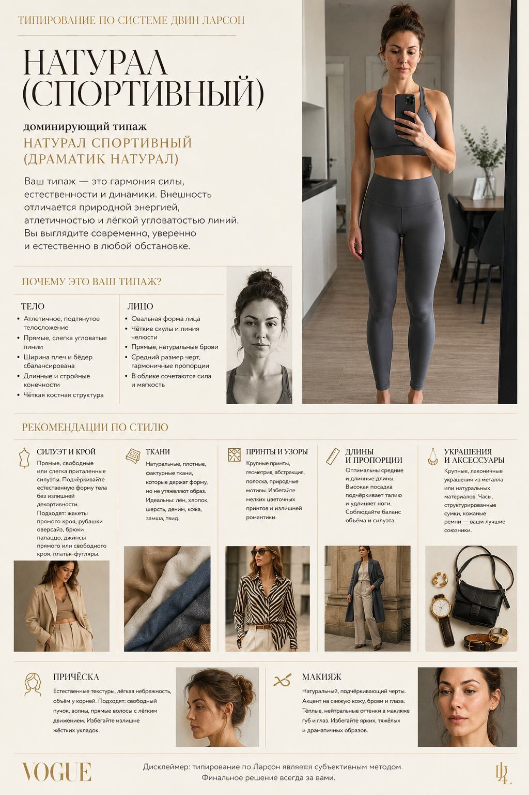

Промтзилла
Как узнать свой типаж по Ларсон с помощью нейросети
Загрузи фото в полный рост — GPT Image 2 определит твой типаж из 20 по системе Двин Ларсон и создаст премиальную инфографику в стиле Vogue с рекомендациями по стилю.
📋 Пошаговая инструкция
- 1Подготовь фото в полный рост или по пояс — нейтральный фон, облегающая одежда, хорошее равномерное освещение
- 2Перейди на study24.ai, открой GPT Image 2 и загрузи фото
- 3Скопируй промт ниже и вставь в поле ввода
- 4Нажми отправить — через 20–30 секунд получишь премиальную инфографику с типажом и рекомендациями
- 5Если хочешь уточнить — добавь к промту: «объясни подробнее смешанный типаж и его особенности»
- 6Скачай инфографику и используй как персональный гайд по стилю
Пример результата

ВходИсходное фото

РезультатПремиальная инфографика с типажом
Промт
RU
Загружаю своё фото в полный рост или по пояс. Определи мой типаж по системе Двин Ларсон и создай премиальную инфографику в стиле редакционной съёмки Vogue. Шаг 1 — определи типаж по Ларсон: — Проанализируй строение тела: рост, пропорции плеч и бёдер, длину конечностей, форму фигуры — Проанализируй черты лица: форму, размер, линии — угловатые или округлые, крупные или деликатные — Определи доминирующий тип из 4 базовых: Драматик, Натурал, Гамин, Романтик — Уточни смешанный типаж если есть (из 20 типов красоты по Ларсон) — Кратко объясни почему — какие конкретные черты внешности привели к этому выводу Шаг 2 — рекомендации по стилю: — Силуэт и крой: какие линии и формы одежды гармонируют с типажом — Ткани: летящие, структурированные, натуральные, плотные — что подходит — Принты и узоры: геометрия, флораль, абстракция — что усиливает типаж — Длины и пропорции в одежде — Украшения и аксессуары — Причёска и макияж Как оформить инфографику: — Стиль: премиальный редакционный, как в журнале Vogue — минималистичный, элегантный, с воздухом — Шрифты: тонкие засечковые для заголовков, санс-сериф для текста — Цветовая палитра: нейтральная и изысканная — кремовый, чёрный, золото или пудровый — Структура: название типажа крупно → краткое описание → рекомендации по стилю в отдельных блоках — Весь текст только на русском языке — Тон: вдохновляющий, уверенный, без критики внешности — Добавь дисклеймер: типирование по Ларсон является субъективным методом, финальное решение всегда за вами
EN
I'm uploading a full-length or waist-up photo of myself. Determine my Dwyn Larson type and create a premium editorial infographic in Vogue magazine style. Step 1 — determine Larson type: — Analyze body structure: height, shoulder and hip proportions, limb length, figure shape — Analyze facial features: shape, size, lines — angular or rounded, bold or delicate — Identify the dominant type from 4 base types: Dramatic, Natural, Gamine, Romantic — Specify the mixed type if applicable (from 20 beauty types by Larson) — Brief explanation — which specific features led to this conclusion Step 2 — style recommendations: — Silhouette and cut: which clothing lines and shapes harmonize with the type — Fabrics: flowing, structured, natural, dense — what works — Prints and patterns: geometric, floral, abstract — what enhances the type — Lengths and proportions in clothing — Jewelry and accessories — Hairstyle and makeup How to design the infographic: — Style: premium editorial, like Vogue magazine — minimalist, elegant, with breathing room — Typography: thin serif for headlines, sans-serif for body text — Color palette: neutral and refined — cream, black, gold or powder — Structure: type name large → brief description → style recommendations in separate blocks — All text in Russian only — Tone: inspiring, confident, no criticism of appearance — Add disclaimer: Larson typing is a subjective method, the final decision is always yours
Теги